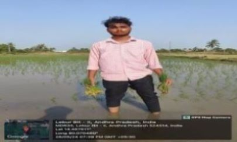
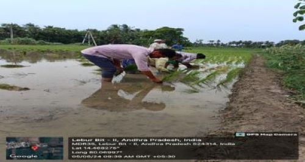

WEEKLY REPORT
WEEK- 4 (From 03-06-24 to 08-06-24)
Objective of the Activity Done: Getting to know the problems of farming in the fields:
Detailed Report:
Day 1:
- >For better implementation understanding the curriculum of CSP is necessary. So, I have studied the guidelines of community service project and understood what to be done in the
fourth week.
Day 2:
- On this day I learnt about the importance of paddy:
- >Rice production in India is an important part of the national economy. India is the world's second-largest producer of rice, and the largest exporter of rice in the world..
- >Rice is one of the chief grains of India, it is the primary source of energy for over half of the world's people.
- >Depending on the strain of rice, it can contain decent amounts of fibre, protein, vitamin
B, iron and manganese. This means it can play a vital role against malnutrition.
Day 3:
- >On this day, I have gone through the various kinds of crops cultivation and harvesting and gained some Knowledge on different kinds of crops then after analysing I have selected the rice crop i.e., Paddy.
Day 4:
- >On this day, I had met same farmer and asked some more questions about the rice crop on how the rice crop cultivation process is going on.
Day 5:
- Problems of Indian Agriculture:
- >Irrigation Problem.
- >Seed problem.
-
- >Middleman exploitation and lack of market understanding.
- >Lack of storage facilities.
- >Government Schemes are not getting reached to small farmers.
Day 6:
- Finally, I am very happy to successfully completed our fourth week project. I am very happy some people are appreciating me to do this and also, they asked conduct more campaigning like this

